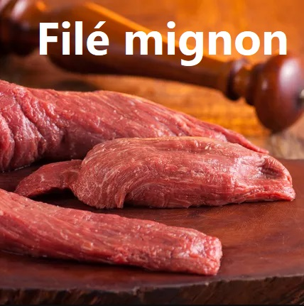
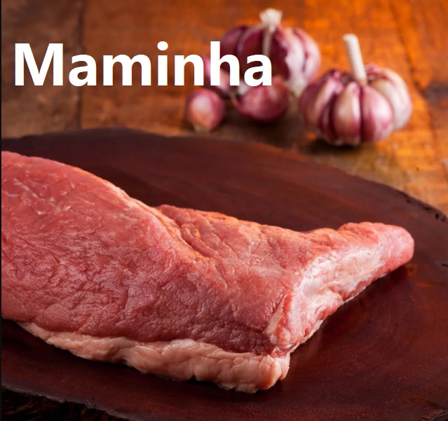
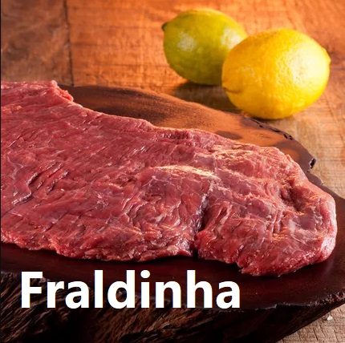
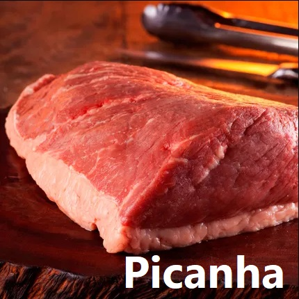
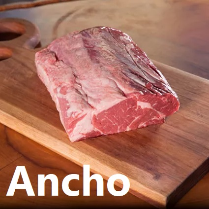
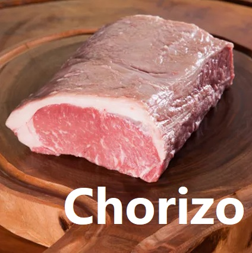
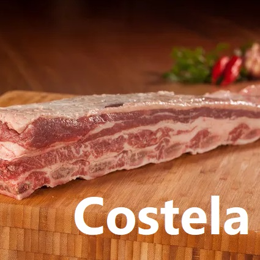
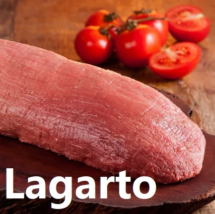

|
Fundado em 1978 por um grupo de amigos, o açougue Faca Cega consolidou-se no mercado oferecendo os melhores cortes de carne do mercado, prezando sempre o bom atendimento e excelente custo benefício. Sediada atualmente no bairro do Limoeiro, nossa missão é fornecer aos nossos clientes carnes com qualidade diferenciada, proporcionando a todos momentos inesquecíveis à mesa. |
Num ramo cada mais concorrido com o crescimento das grandes redes de hipermercados, os açougues
investem em estrutura e melhor atendimento para poder ganhar novos clientes.
Tendo expectativa nesse movimento nós temos como novidade em unir serviços e dar conforto aos
nossos clientes o açougue FACA CEGA inova mantendo a tradição na qualidade e no bom preço, estamos
também seguindo os novos padrões do mercado para melhor receber você.
Veja na video-reportagem ao lado como você só tem a ganhar com esta novidade...
Reportagem TV Cultura - Evelin Avancinni
|  |  |
|  |  |
|  |  |
|  |  |